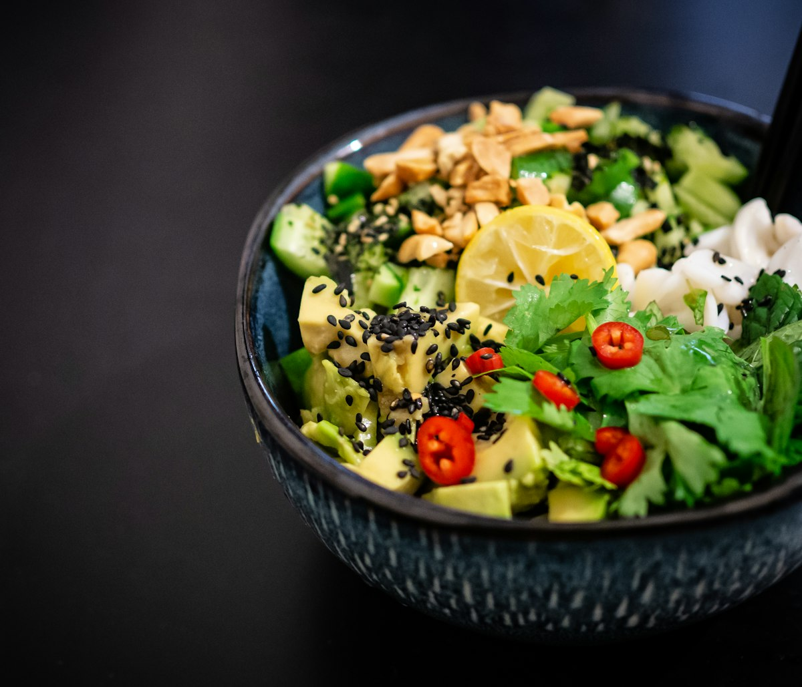
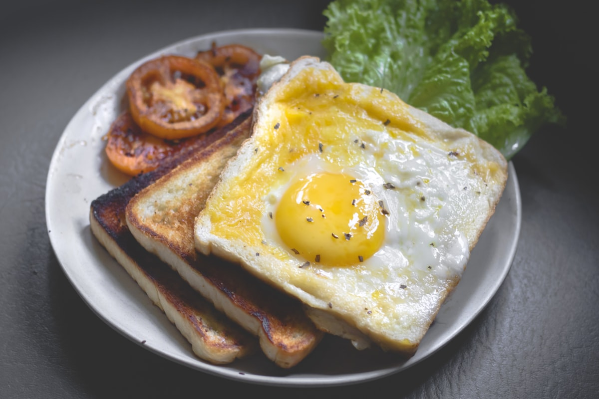

Auténtica Cocina Chapina & Panadería Artesanal
Deliciosos pepián de pollo, kak'ik ancestral, tamales colorados, chuchitos, desayunos chapines y pan dulce recién salido del horno en 6016 The Plaza.
Recetas Ancestrales
Especialidades Tradicionales Chapinas
Preparadas diariamente con pepitoria tostada, chiles secos, achiote natural, tortillas de maíz hechas a mano y amor por nuestras raíces.

Plato NacionalPepián Tradicional de Pollo
El emblemático guisado guatemalteco elaborado con semillas de pepitoria tostada, ajonjolí, chiles pasa y guaque, servido con pollo tierno, verduras, arroz y tortillas calientes.
 Hechos a Mano
Hechos a Mano
Tamales en Hoja de Plátano
Suave masa de maíz sazonada, rellena de carne de cerdo o pollo con recado rojo criollo, pasas y aceitunas, envuelta en hoja de plátano aromática.
 Horneado Diario
Horneado Diario
Pan Dulce Chapín & Conchas
Variedad de pan de yema, conchas rellenas de guayaba, champurradas crujientes para chopear en café, y shecas de frijol dulce recién horneadas.
El Calor del Hogar
Desayunos, Panadería & Comida Familiar
En Guatelinda abrimos desde las 7:00 de la mañana para servir los desayunos chapines más completos de Charlotte, acompañados de café caliente, atol de elote y pan dulce artesanal.
Desayunos Chapines Completos
Huevos estrellados o revueltos con salsa, plátanos fritos dulces, frijoles volteados, queso fresco, crema y tortillas.
Caldos Caseros Reconfortantes
Caldo de res con costilla jugosa, elote y yuca, kak'ik de chunto (pavo) y caldo de gallina criolla.
Panadería Abastecida Continuamente
Lleva docenas de pan dulce fresco a tu casa o trabajo para compartir en familia.
